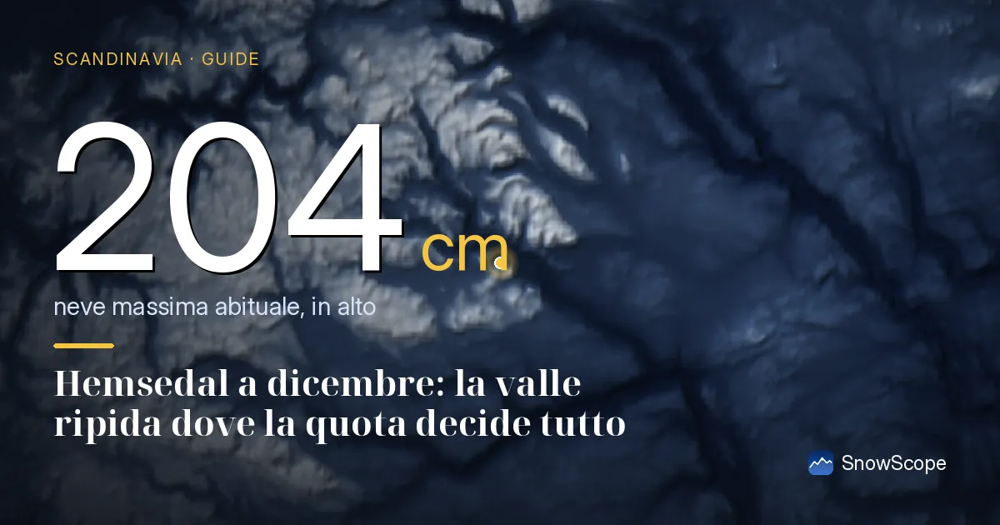

Hemsedal a dicembre: la valle ripida dove la quota decide tutto
Hemsedal è una stazione costruita su terreni ripidi. A dicembre, dove scii conta molto più di quando. Un tipico 15 dicembre offre 32 cm alla base di 640 m, 70 cm a mezza montagna (1039 m) e 106 cm in vetta (1439 m). Questo dislivello verticale caratterizza l'intero mese.
Le previsioni neve in tempo reale per Hemsedal nell'app SnowScopeAltezza neve, allerte powder e mappa 3D, gratis.
Tre zone, tre dicembri
Con 800 m di dislivello, 48 km di piste e 22 impianti, Hemsedal sale ripidamente dalla valle alla cresta. La base è la scommessa: solo il 57% dei nostri 46 inverni ha raggiunto 30 cm lì nella settimana 15-21 dicembre, e in 3 di quei 46 inverni il terreno era nudo il 15 dicembre stesso.
Mezza montagna ribalta le probabilità. A 1039 m, il 98% degli inverni ha raggiunto 30 cm a metà dicembre, e anche un anno magro (1 su 10) manteneva 48 cm entro il 15 dicembre. In vetta, ogni singolo inverno nei nostri archivi ha avuto 30 cm o più in ogni settimana di dicembre.


Quando visitare ogni quota
Se il tuo piano è mezza montagna e vetta, quasi ogni settimana di dicembre funziona. Il primo giorno tipico con 30 cm a mezza montagna è il 4 novembre, quindi hai una lunga finestra. La settimana di Natale è migliore per la profondità: l'85% degli inverni ha avuto 60 cm o più a mezza montagna allora.
Alla base, la pazienza ripaga. La prima settimana di dicembre raggiunge 30 cm solo nel 46% degli inverni. Aspetta fino alla settimana di Natale, quando il 65% degli inverni ha 30 cm o più. Questa è una stazione per chi scia in salita, non in discesa verso il paese.
Le piste superiori tengono il loro
La storia di Hemsedal nel tempo è una di divergenza. Mezza montagna ha raggiunto una media di 75 cm a dicembre durante i primi 15 inverni (1980-81 a 1994-95), e 66 cm negli ultimi 15 (2011-12 a 2025-26). Ogni settimana di Natale degli ultimi 15 inverni ha comunque avuto 30 cm lì.
La base racconta una storia più dura: è scesa da una media di 45 cm a 23 cm. L'inverno scorso (2025-26) ha raggiunto 61 cm a mezza montagna il 15 dicembre ma solo 27 cm alla base nella stessa data.
Prezzi degli impianti e tempistica
Hemsedal utilizza prezzi dinamici per gli skipass giornalieri, con prezzi fissati per data nel negozio online ufficiale dell'operatore. Il 13 novembre 2026, nessun prezzo fisso è stato pubblicato, quindi non possiamo fornirne uno. Lo schema è familiare: prenota online, prenota presto, e evita la finestra delle festività natalizie se il costo è una tua preoccupazione.
Le giornate brevi di dicembre significano che le partenze presto contano. Pianifica le tue migliori piste prima di pranzo, e scendi con l'impianto da mezza montagna se la base sembra sottile.
Hemsedal rispetto a Geilo
Geilo si trova sull'altopiano alto a sud di qui, più basso e più dolce. La sua base (779 m) ha avuto 30 cm nella settimana 15-21 dicembre nel 80% degli inverni, meglio della base di Hemsedal, ma la sua vetta a 1163 m è ancora più bassa, con solo 68 cm il 15 dicembre tipico. Lo skipass giornaliero di Geilo inizia a NOK 590 (approssimativamente EUR 56 al tasso di riferimento del 12 novembre).
Scegli in base a ciò che scii: Hemsedal per terreni ripidi e profondità affidabile in alto, Geilo per piste più facili e neve più in basso.
Sicurezza sulle piste superiori
Se ti avventuri fuoripista dopo la neve fresca, consulta l'avviso di valanghe norvegese su varsom.no prima di andare. Le piste superiori mantengono bene la neve, ma quella stessa stabilità può nascondere pericoli all'inizio della stagione.
Consigli per sciatori
- Scia a mezza montagna e oltre a inizio dicembre. Ritorna alla base solo dopo la metà del mese o dopo nuove nevicate.
- Prenota il tuo skipass online il prima possibile; i prezzi dinamici premiano i prenotatori anticipati.
- Inizia ogni giornata con il primo impianto per massimizzare la luce naturale sugli spioventi superiori.
- Sciatori fuoripista: consulta il bollettino valanghe Varsom (varsom.no) prima di lasciare la pista.
- Prepara l'attrezzatura per tre diverse condizioni: neve sottile alla base, media a mezza montagna, e copertura profonda in vetta.
Su questi numeri
Le altezze neve delle località sono la neve più alta sui pendii superiori alla data indicata; sono stime per un'area, non una misura in un punto. Le previsioni possono cambiare. Leggi sempre il bollettino valanghe ufficiale prima del fuoripista.
Bollettini valanghe ufficiali: Varsom (NVE)
Cita questo articolo
Per ricerca, didattica o stampa: numeri e grafici sono liberamente riutilizzabili con licenza CC BY 4.0 citando così.
SnowScope (2026), Hemsedal a dicembre: la valle ripida dove la quota decide tutto, https://snowscope.app/blog/it/2026/11/hemsedal-december-skiing-snow-depth-price.html, consultato il 2026-11-14
SnowScope (Atlas Labs). (2026, November 14). Hemsedal a dicembre: la valle ripida dove la quota decide tutto. SnowScope snow reports. https://snowscope.app/blog/it/2026/11/hemsedal-december-skiing-snow-depth-price.html
BibTeX
@misc{snowscope2026hemsedaldecemberskiingsn,
author = {{SnowScope (Atlas Labs)}},
title = {Hemsedal a dicembre: la valle ripida dove la quota decide tutto},
year = {2026},
month = nov,
howpublished = {\url{https://snowscope.app/blog/it/2026/11/hemsedal-december-skiing-snow-depth-price.html}},
note = {Published 2026-11-14 13:29 UTC; accessed 2026-11-14}
}· CC BY 4.0 · Metodi, dati e strumenti →
Hemsedal: neve e temperatura per quota, quest'inverno vs lo scorso (strumenti) →
Segui Hemsedal
Gratis: un messaggio quando arriva la neve e il meteo ogni mattina.